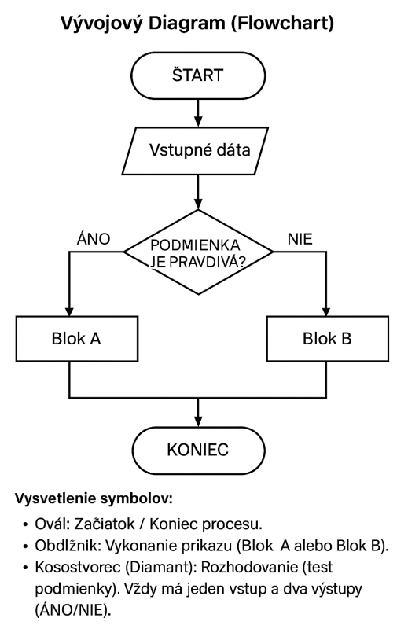

1 × 45 min Teória a Python

| Čas | Časť hodiny | Pracovný zámer |
|---|---|---|
| 0–5 min | Motivácia | Všimnúť si rozhodnutie „ak platí…, inak…“ v bežnom postupe. |
| 5–13 min | Podmienka | Určiť otázku s pravdivou/nepravdivou odpoveďou a jej dôsledok. |
| 13–23 min | Dve vetvy | Rozlíšiť priebeh pri splnenej a nesplnenej podmienke. |
| 23–37 min | Riadená aktivita | Navrhnúť vetvenie pre slovné zadanie a prejsť obe možnosti. |
| 37–45 min | Samostatná kontrola | Otestovať hraničnú hodnotu a skontrolovať, či sú pokryté obe vetvy. |
Žiak vysvetlí, že podmienka vyhodnocuje logický výraz na True alebo False, použije porovnávacie operátory, zapíše jednoduché vetvenie v Pythone pomocou if a else, vysvetlí obe vetvy a otestuje hraničné aj bežné vstupy.
Podmienka umožňuje algoritmu rozhodnúť sa, čo vykonať ďalej. Najprv sa vyhodnotí logický výraz. Ak je výsledkom True (pravda), vykoná sa jedna vetva; ak je False (nepravda), vykoná sa druhá vetva alebo sa blok preskočí.
Bežný príklad: Ak prší, vezmi si dáždnik, inak choď bez neho. Otázka „Prší?“ má dve možné odpovede, ktoré určia ďalší krok.
Porovnávacie operátory porovnávajú hodnoty a vracajú True alebo False. V Pythone ich zapisujeme takto:
| Operátor | Význam | Príklad | Výsledok |
|---|---|---|---|
== | rovná sa | 5 == 5 | True |
!= | nerovná sa | 5 != 3 | True |
> | je väčšie ako | 4 > 7 | False |
< | je menšie ako | 2 < 8 | True |
>= | je väčšie alebo rovné | 18 >= 18 | True |
<= | je menšie alebo rovné | 0 <= 0 | True |
Operátor = priraďuje hodnotu do premennej; == porovnáva dve hodnoty. Zápis vek = 18 zmení premennú, kým vek == 18 je otázka s výsledkom pravda/nepravda.
V Pythone slovo if znamená „ak“ a else „inak“. Dvojbodka ukončuje hlavičku podmienky a odsadené riadky tvoria blok príkazov:
podmienka = True
if podmienka:
print("Podmienka je splnená.")
else:
print("Podmienka nie je splnená."): za podmienkou je povinná.if/else sa vykoná práve jedna z vetiev.Operátor % vypočíta zvyšok po delení. Ak je zvyšok pri delení dvoma rovný nule, číslo je párne.
cislo = int(input("Zadaj celé číslo: "))
if cislo % 2 == 0:
print("Číslo je párne.")
else:
print("Číslo je nepárne.")Pri vstupe 8 je výraz cislo % 2 == 0 pravdivý a vypíše sa „párne“. Pri vstupe 7 je nepravdivý a vykoná sa vetva else.
Kosoštvorec predstavuje rozhodnutie. Má jeden vstup a vetvy pre výsledky „áno“ a „nie“. Po vykonaní príslušnej činnosti sa cesty môžu opäť spojiť a pokračovať spoločným postupom.
>=.Pri návrhu podmienky si over, či pokrýva všetky možnosti vrátane hranice. Ak chceme rozlíšiť záporné číslo a číslo, ktoré je nula alebo väčšie, podmienka n >= 0 pokrýva aj nulu. Pri n > 0 by nula patrila do druhej vetvy.
n >= 0:n = 5 → True → nezáporné.n = 0 → True → nezáporné.n = -2 → False → záporné.Ak treba rozlíšiť viac než dva prípady, môžeme pridať jednu alebo viac vetiev elif („inak, ak“). Python skúša podmienky zhora nadol a vykoná iba prvú pravdivú vetvu. Ak nie je pravdivá žiadna a je uvedené else, vykoná sa posledná vetva.
teplota = float(input("Zadaj teplotu: "))
if teplota < 0:
print("Mrzne.")
elif teplota == 0:
print("Teplota je presne nula.")
else:
print("Teplota je nad nulou.")Vetvy elif tu iba predstavujeme; zložitejšie, vnorené rozhodovanie a návrh úplného stromu možností precvičíme v téme 2.6 Algoritmizácia vnorenej podmienky.
= a ==: na porovnanie použi ==, nie priradenie.if, elif a else patrí :.float môžu byť nepresné; pri takých úlohách použi vhodnú toleranciu.body = 50 a podmienke body >= 50.bool, nie príkaz na vykonanie. V príklade s nulou nechajte žiakov predpovedať výsledok ešte pred spustením. V 45 minútach stačí precvičiť jednu vetvu if, úplnú dvojvetvovú voľbu if/else a stručne ukázať elif; zložité vnorené podmienky ponechajte na nasledujúcu tému.if.bool.